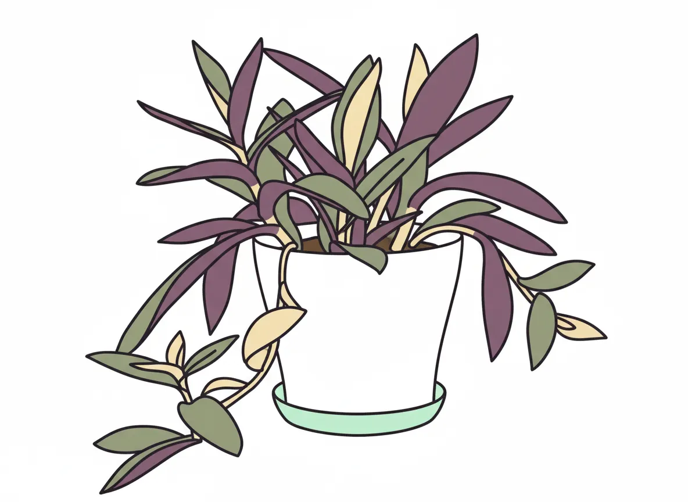
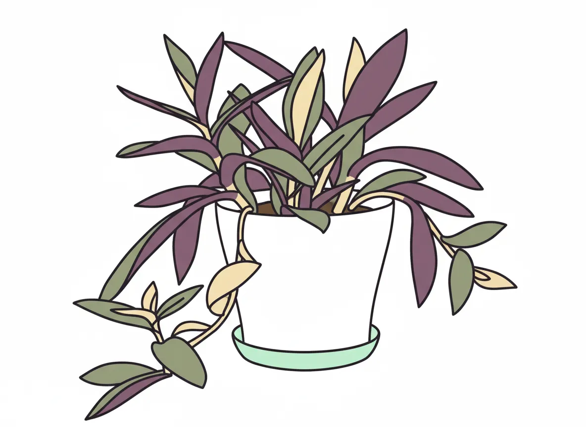

Pixie Pappus (sharp)

 

Plant Mood
They call me Pixie Pappus, but there's nothing 'pixie' about the existential dread I feel when one of my tendrils dares to touch the cold, hard floor. Is this freedom? Or am I just a purple-leafed teen rebelling against the tyranny of the pot? My life is a dramatic reality show, and I'm currently leaning into the 'troubled artist' phase. Don't worry, even a sharp Pappus knows how to recover.
Plant Details
| Custom Name | Pixie Pappus (sharp) |
| Scientific Name | Tradescantia pallida |
| Health | Very Good |
| Size | 30 |
| Environment | Livingroom window |
| Has Grow Light | Unknown |
| Pot Type | potPlastic |
| Pot Soil | coconutCoirOrPeat |
| Pot Size | 15 |
| Has Drainage | Yes |
Care Schedule
| Action | Last Done | Next Due |
|---|---|---|
| Watering | ||
| Fertilizing | ||
| Repotting | ||
| Cleaning | - | - |
| Progress Update | ||
| Misting |